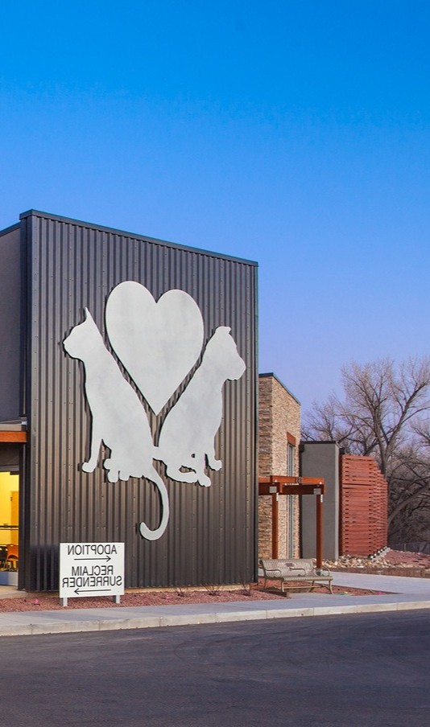
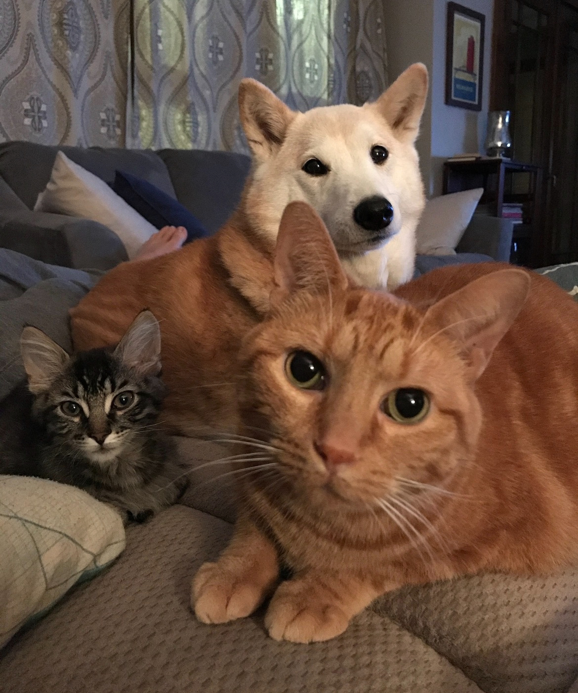
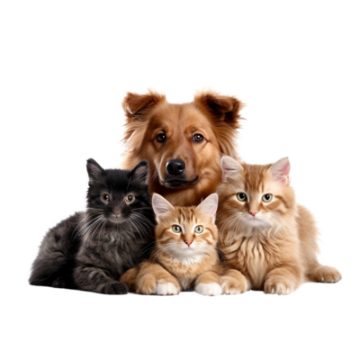

See how our shelter became what it is today and learn about our journey since the very beginning

Back in 2015, driven by the high number of animals on the street, a group of people decided to come together and supply bowls of water and food for the pawed creatures. Starting from a few neighbors and extending all the way to the other side of town, everyone would take turns, buying the food, refilling the dishes periodically and stopping to provide a scratch or good petting from time to time. Soon enough these nice small habits would bring together a whole community of animal enthusiasts. Later that year, when their furry friends were struggling in the winter temperatures, the people would rise to the occasion and take them in their homes, and care for them to the best of their abilities, making it through the cold period.
Soon after, a few dedicated members of this community took it upon themselves to open the Pet Haven Shelter. They knew it would mean a lot of effort, but they wanted to make a change. The space was small initially, only fitting for a handful of rescues. Thankfully, there was a positive reception after the official opening. Many people were eager to offer their homes to the helpless animals. After the initial success of the first year, upgrades were made: bigger space, more toys and comfy beds for the pets, as well as equipment for the staff to handle the adoption process and other technicalities.


Over the years that followed, the shelter continued to evolve and change for the better, from offering volunteering opportunities to organising social events and collaborating with NGOs. Nowadays, although we came a long way, we still have the same goal: finding a home for all the animals in need of one.